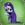

|

DigiSim
Author of 7 Stories |
Scenes from Nerima 6
The DigiSim Files
As always, my thanks go out to Andrew Eoff, a.k.a. Dkun, for starting this fic as well as Gregg Sharp and Stephen Schlueter for continuing it. I also want to thank burgerbill, Carrotglace, Hung Nguyen and kokatsu na tenshi for giving their permission to let me use some of their fics as blooper material. I'd be out of ideas in no time otherwise. Let the silliness begin.
Nodoka: Ranma, that wasn't very manly of you.
Ranma: Mom, please get off my ass.
The cast and crew break out in laughter.
Ranma (sounding a little surprised): You know that came out…so naturally.
Kuno: Were I to count the clock that tells the time and see the brave day sunk into hideous night that I…who the hell has been messing with my script?
Ranma is seen tiptoeing off in the background with an evil grin on his face while the rest of the cast laugh.
A red rubber ball with a black elastic loop trailing from it and two tiny feet is seen scuttling quickly along the floor in front of Ranma and Akane in the hall of Furinkan.
Akane: What the hell was that?
Ranma: A running gag.
Everybody groans.
Ranma: What?
Sailor Ranko Just Add Water Outtakes Scene 1
Ranma sighed for the third time. He sat in the little dining room table of his Juuban apartment clutching the letter he got from Juuban High School. Akane just shook her head. "You know Ranma, the note you got from Dr. Tofu was going to be questioned sooner or later. C'mon, did you think that a 'Back Problem' was an excuse they would buy forever?"
Ranma: Sure I did, especially if you think about what we do all day.
Akane blushes.
Director (groaning): Ranma, I thought we discussed this. Stop bringing up what you do with your sister.
Ranma: Sorry sir.
Sailor Ranko Just Add Water Outtakes Scene 2
Ranma sighed for the third time. He sat in the little dining room table of his Juuban apartment clutching the letter he got from Juuban High School. Akane just shook her head. "You know Ranma, the note you got from Dr. Tofu was going to be questioned sooner or later. C'mon, did you think that a 'Back Problem' was an excuse they would buy forever?"
Ranma knew what this meant. He was going to have to attend gym classes. As a martial artist, he would have welcomed anything that would have allowed him to train and maintain his body. But his curse had a dark side and he wanted to avoid the problems he had while at Furinkan. "Well, I'm getting an exam from the school nurse today. If I pass, I will be in gym shorts in the afternoon."
Akane starts drooling.
Director (whining slightly): Why did Takahashi-san have to hire these perverts?
Sailor Ranko Just Add Water Outtakes Scene 3
"Mr. Saotome! Please come in here." The school nurse called Ranma into the little nursing station. Ranma earlier in the day was trying out different ways to intentionally throw out his back, dislocate his shoulder or annoy Akane to beat him senseless. He wanted to fail this exam.
The nurse took one look at Ranma and knew that the note from Dr. Tofu must have been a misunderstanding. Ranma was a prime specimen of maleness. His chest was solid muscle and his arms were fully defined. He had no trace of fat on him and looked like he could take on Rambo without trying. The nurse wondered why a person like this would want to be excused from gym class. "Please remove your shirt." She pulled out a stethoscope to listen to his heart.
The nurse had to resist wanting to run off with Ranma right then and there. She saw his bare chest and wanted to bury herself in it. She calmed down a bit and held the stethoscope against his ribs listening to his lungs. "Inhale. Exhale." Lungs were fine, heart rate was low but that was because he was in prime physical condition. She then slipped her hand down the front of his pants and started fondling him.
Director (getting upset): What do you think you're doing?
Nurse: Um, checking him for a hernia?
Director (sighs): First of all, a high school nurse doesn't do that, secondly he needs to be nude from the waist down, and third what did you do with the real nurse Nodoka?
Nodoka (sounding surprised): How did you know it was me?
Director: Your wig is slipping.
Nodoka: Oh.
Director (mumbling to himself): Maybe I should have signed up to direct 'Urusei Yatsura.' I doubt any of that cast has perverts in it.
Sailor Ranko Just Add Water Outtakes Scene 4
"What's wrong with Ranma?" Makoto asked Akane.
Akane stared at the grass. "Have you thought about what life is like for Ranma with that curse of his?"
Ranko gave out a scream from inside the ladies' restroom. "WHAT! IT'S BROKEN!" She bolted from the restroom and ran to the cafeteria.
Minako saw where Ranko was going, "I guess the hot water isn't working in the restroom."
Ranko got to the cafeteria and cried out, "I need some hot water! Can I get some?"
The attendant looked at Ranko with fear. This redhead was psychotic, "We're closed." Ranko stomped the ground and threw her cup down. "ARGH!" She took a few deep breaths and slowly spoke with an air of defeat, "I guess it's time to face the music." Ranko walked off to class holding her head down with the excitement of a woman walking towards a guillotine.
Akane held back the other girls. "Rei, you should be ashamed of yourself."
Rei: I should?
Usagi (growling): Rei, quit picking on my husband!
The director starts sobbing.
Sailor Ranko Just Add Water Outtakes Scene 5
The teacher rubbed his temples, "Miss, you will be reporting to the principal's office if you don't stop this nonsense. Now, for the last time, what is your name?"
"Fine! My name is Little Red Riding Hood! I'm hiding from the Big Bad Wolf!" She crossed her arms and her face went flush with anger.
"That's it!" He turned to Akane, "Akane, please escort this troublemaker to the principal's office." He stormed off to his desk and filled out a hall pass. Akane stood up and held out her hand to Ranko. Ranko didn't get up. She stayed at her desk.
The teacher handed the hall pass to Akane and shot a look of disapproval to Ranko. "Miss, please leave my classroom!" He turned to Akane, "Akane, find your husband and get him in here or he will be given a detention alongside this troublemaker."
Akane started twitching her eyebrows, "That troublemaker is my HUSBAND!"
He looked at Ranko and back to Akane. "What sort of joke is this? It is not funny and it's very disrespectful. Why are you trying to pass this off as some sort of excuse for Ranma to miss this class?"
Ranko stood up, "We have magical girls running around town blowing up youma and you can't accept the fact that I have a curse that changes me into THIS!"
Teacher: Oh, good point. Okay then.
Director: You're not supposed to agree with that.
Teacher: I'm not?
Akane (shouting): SAOTOME, FOR WHAT YOU HAVE DONE TO SHAMPOO…wait a minute, that's not right.
Ranma chuckles while the director groans.
Sailor Ranko Tunnel Vision Outtakes Scene 1
Ranma and Akane hadn't been in Nerima for several weeks and were happy to be back. They were visiting the Tendo dojo for the weekend. Living in Juuban in their new apartment had been an adventure of boredom. Since the wedding, there just hadn't been the usual number of psychos trying to pummel, beat, maim, marry, kidnap or otherwise introduce mayhem into the Ranma Saotome household. In fact, it was rather dull.
Ranma (looking at the narrator): This is a problem why?
Narrator: Um.
Sailor Ranko Tunnel Vision Outtakes Scene 2
Ranma still taught the other Senshi martial arts to improve the other's battle skills. These lessons were almost always in the form of a guy. Sometimes that cursed old woman with the ladle happened to cross his path. Without easy access to hot water at the dojo, the lesson was with Ranko. However Usagi's whining was really getting on Ranma's nerves. How can this crybaby become a queen someday? Seeing the stress in Ranma, Akane suggested that they spent the weekend away from it all.
So in the span of two hours, the time it took to get from the bus station to the Tendo dojo, Ranma was smacked with a battle spatula, ran over with a bike, listened to really bad poetry and had someone demand payment for his dad's debts. He also had four sex changes. Yes, nothing had changed in Nerima.
Ranma (sighing): Is it too late for a rewrite?
Usagi: Ranma, you're my husband and I love you but please shut up (turning to glare at the narrator) and who are you calling a crybaby.
Sailor Ranko Tunnel Vision Outtakes Scene 3
"So, you are saying that you want me to leave? I've never told anyone."
"No, no! It's not like that. It's that I want you to be part of my life, but if my secret gets out then I'll have to distance myself because you can get hurt. I can't live with myself if something was to happen to you. Uh, it's err..." Ranko tried to find the right words that didn't involve shoe leather. Carefully she says, "As long as no one knows, I can be with you and you can be with us. Otherwise, bad things can happen. Please don't tell dad or the Tendos or anyone else. I don't want anyone to get hurt because of what we have become."
Mom looked at her daughters eyes and asked, "And what have you become Ranko?"
"I don't know. But I do know this," Ranko then pulled out a pair of Ray-Bans and slipped them on, "I make this look good."
Ranko and Nodoka crack up.
Sailor Ranko Tunnel Vision Outtakes Scene 4
"Sun you Jerk!" screamed Sailor Io as she once again fired her Lava Blast at her currently female husband. As usual, Sailor Sun stuck her tongue out and easily dodged her attack. Or she would have if she hadn't tripped over a small rock in her path. The Lava Blast soared over her head and headed off-screen where a howling scream was heard. Sun turned around from where she was to see what the scream was while Io looked like she had all the blood drained from her body.
Sun: Oh nice going sis. You turned the director into a crispy critter.
Io (starting to sob): But I didn't mean to.
Ambulance sirens could be heard in the background. Luckily the director lived but he never sat near the camera during battle scenes ever again.
Sailor Ranko Tunnel Vision Outtakes Scene 5
Ami, Rei and Makoto got together with Usagi, Akane and Ranma during lunch break. Ami suggested that they all go to the mall after school. In unison, the three late risers produced their detention slips with a dejected look on their faces. Ami said, "Usagi! You have an alarm clock. Why don't you use it?"
"I used it!" cried Usagi. "And I used the snooze button at least three times and it still won't get me up in time for school!"
"What else is new?" Ami sighed, she turned to Ranma, "And what's your excuse Ranma?"
"Uh... Well we were..." Ranma stuttered.
"Training," said Akane. "Yes, we were training again."
Rei smirked, "Let me guess, 8 hour time difference?"
Makoto added, "So what's the damage this time?"
"Rocks, lots of rocks." Akane giggled, "Now if I can get the rocks out of Ranma's head."
"Hey! I won fair and square." Ranma said.
"Rematch?"
"Any time!"
"Ok, bring it on!" Akane stood up and took a fighting stance.
"Now, now you two," glared Makoto, "this isn't Furinkan; we can't be starting fights here."
"Coming from a girl who was kicked out of school for fighting, that is the pot calling the kettle black." Rei then took a sip of her juice and just stretched out on the grass.
"Please sit down Akane and enjoy your lunch," Ami said and looked at
Usagi's hungry eyes, "before it vanishes."
"Well, if you are not hungry..." pleaded Usagi.
"Usagi, how in the world do you not pork out?" Ranma asked. "Akane and I have a strict workout routine so we burn up all of our calories, but how do you do it?"
Usagi: Sex, lots and lots of sex. But being my husband, you already knew that.
Ranma: Oh yeah.
Sailor Ranko Just Add Water Outtakes Scene 6
Nabiki exited the subway station near the Tokyo bay waterfront. This was going to be a profitable evening. She had a meeting with Kuno to exchange yen for information. She didn't want to perform the transaction at school. This information was extra juicy and worthy of a meeting at a very expensive restaurant. Kuno of course will be buying. Nabiki grinned. She knew exactly how to manage her pet.
She wore a smart business suit and skirt, heels and looked the part of a lawyer about to show the damning evidence to clinch the case. Only a set of fangs would have made the image of Nabiki fit what she had in mind for the evening. She was going to suck Kuno dry.
Nabiki: Thank god he's gay and I don't have to do that for real. I'd prefer Ranma.
Director (shouting): Quit ad libbing!
Fist of the Pikachu Outtakes Scene 1
"Whew! I thought I was going to stay like that forever!" Ranma ran his hands over his chest and sighed in relief, as he didn't find any additional fullness in his torso.
"Oh so sorry sir! Cure is only temporary! Cold water will change into girl again! Hot water change back!"
"Is there any cure for this?"
"So sorry sir! Not know cure! No good to try and go into Nanniichuan! Spring of Drowned Man! Once cursed by Jusenkyo, waters of other springs no work!"
Ranma's anger came back with a vengeance as he hauled up the battered body of his father. He shook the panda back to a conscious state as he screamed in his face. "You and your stupid ideas! You just had to drag me here, even though you don't know a word of Chinese! THIS IS ALL YOUR FAULT!"
"Growf?"
That was all that Genma Saotome could say before he was severely pummeled and then launched into the air by way of an uppercut to the chin.
Ranma huffed as he watched his old man soar up into the stratosphere and then went to retrieve his backpack He then stomped off while muttering, "At least I got good distance."
The director was just scratching his head and wondering what he did wrong in a past life to be stuck directing shows like this.
Fist of the Pikachu Outtakes Scene 2
Within the village of the Joketsuzoku, the matriarch known as Cologne was busy adding the final ingredients to a bubbling cauldron. The three hundred-year old Elder cackled as she drew a strange-looking amulet from her robes and held it over the potion. Behind her, the other matriarchs watched with apprehension.
"Are you certain that you should be doing this?" Mascara asked.
"Why not?" Cologne replied as the smoke coming from the cauldron began to swirl around the amulet. "It has been almost three hundred years since that treacherous Happosai had stolen our treasures! With this amulet, we shall at last be able to reclaim our lost magical talismans! This will be our only chance though! The planets are in perfect alignment and the amulet will reach full power within minutes after it is exposed to the vapors of the potion! It will then seek out the mystical energies contained within our treasures and bring them to us, wherever they may be! If Happosai is with them, then he shall be brought to us as well and we shall exact our long-awaited revenge! That in itself justifies the use of our last magical item, does it not?"
The Elders slowly nodded as they too had long-standing grudges against the perverted master of the Anything Goes Martial Arts. Cologne then sneezed and accidentally dropped the amulet on the floor where it broke.
Cologne: Damn It! That's the fifth one today! Stinking arthritis!
Director (sighing): Somebody call the prop department and put them on standby just in case. And get me some antacid. This is going to be a long scene.
Insertion Outtakes Scene 1
"Damn it! I know where I'm going!" muttered Dan angrily.
"Come on! Try to get along will ya? We don't know how long we're stuck like this!" pleaded Carrot. "We've got to try and be good roomies. Okay?"
"Roomies?" muttered Ranma in horror.
"Fine! We'll go your way! Don't come crying to me when we end up in India!" snapped Dan.
"Great!" said Carrot cheerfully. "So, how ya doin, Ranma?"
That did it. "How am I doing? I'm a friggin girl! I'm hearing two different voices inside my head, and I ain't walkin nowhere, but somehow I am! How the hell do you think I'm doin!"
"Jeez, calm down. There's no need to blow a gasket," said Carrot lazily.
"Calm down? CALM DOWN? Are you nuts?" snapped Ranma. He then grasped his head in pain as loud feedback reverberated in his ears and yanked off a hidden headset he had been wearing.
Dan (in a sing-song voice off-camera): Oh Mr. Director, Carrot dropped his microphone.
Carrot (off-camera): Oh blow it out your ass Dan.
Insertion Outtakes Scene 2
Ranma was sitting at the table with the Tendos, seeming to beam with pride as the panda glared at her angrily. None of the Tendos noticed this, as they were focused on Soun's prone form on the ground just beside the table. He had a cold cloth sitting across his forehead, and tears in his eyes.
"This is all your fault daddy!" said Nabiki.
"Well I assumed that my friend Saotome's son was a boy!" snapped the man in retort.
"Hey! Aren't you going to cop another feel?" said Ranma as she turned her head towards Nabiki and grabbed the girl's hand, pulling it to her chest again.
Nabiki (shrugging): Okay, sure.
Ranma-chan and Nabiki then proceed to feel each other up.
The director is huddled in a ball with a nearly empty bottle of whiskey resting next to his head while sobbing quietly and mumbling about 'damn perverts.'
Insertion Outtakes Scene 3
Meanwhile...
Sailor Pluto frowned, something was wrong. A force of chaos like no other had appeared suddenly. She had been unable to pinpoint it, and it frustrated her to no end. The Senshi weren't scheduled to awaken for some time yet in this universe, not that she realized that it was different from the others. Beryl shouldn't awaken for many years either, but this seemed even worse than her.
Whatever it was, it was crazy, violent, and chaotic. It had to be evil; there was nothing good that combined all three of those qualities.
Pluto: Well maybe Los Angeles but I don't think this counts just now.
Akane: Not everybody thinks the whole world revolves around BOYS!
Nabiki: You don't know many nymphomaniacs, do you?
Ryoga (shouting): WHERE ON EARTH AM I NOW?
Ranma (in a bad alien disguise): What makes you think this is Earth?
Ryoga runs off in a panic, stops suddenly once he realizes who that was then runs back swinging his umbrella. Ranma runs off in the other direction with Ryoga yelling obscenities at him.
Akane and Ranma are in the tea room of the Tendo home going over their scripts. Akane is standing while facing the camera and Ranma is sitting in a lotus position also facing the camera. Nabiki, Kasumi, Soun and Genma-panda are sitting around the table behind them also checking their scripts. Akane and Ranma are arguing with the director.
Akane (sounding upset): Look, are you sure about this? I mean, my character has never used a mallet before so why should I start now?
Ranma: She's right you know. What will the fans say?
Director: I don't know why you two are arguing about this. I didn't write the script.
Akane: But it just seems wrong. Whenever Ranma's character pissed mine off, she would either punch or kick him, or use a nearby blunt instrument. Why a mallet all of a sudden?
Director: Look, it's for only one scene and you'll never use it again anyway.
Ranma: Fat lot you know. What if the fans latch onto her using it? What if for some reason once the series is over, somebody gets it into their head to write their own stories about us and they have Akane always blowing her top and swinging a mallet around? She'll end up as a horrible caricature.
Kasumi: Exactly, and what about me or Nabiki? I'd turn into some sort of airhead and Nabiki would be a money-hungry ice bitch. You think we want that?
Soun: And what about Genma and myself? He'll end up as a lazy and brainless coward and I'll be a fountain with legs.
Panda sign: Let's not forget about Tatewaki and Ryoga.
Akane: Now do you see why I don't like this? We've got to think of our careers here.
Director: I doubt any of that will happen. It's not like this show will live forever or anything. Trust me on this.
Insertion Outtakes Scene 4
"Hate boys! Hate boys! Hate boys! HATE BOYS!" screamed Akane as her morning tradition began.
Ranma blinked and started walking forward with his hands in his pockets lazily. "Oh yeah," he said out loud, as if he'd just remembered something. Akane met the hoards of boys attacking her and he followed just behind her, stepping over fallen bodies, and ducking under the occasional thrown ones.
Finally, they were all defeated leaving her and Ranma about halfway to the doors of the school. The ponytailed boy was standing in the middle of the one time crowd, and looking around idly. He didn't seem particularly concerned with this new development. Finally, he stepped forward, just in time to catch a flying rose from the air.
"What the?" he muttered in confusion. He turned and handed the rose to Akane. "Here, this is probably yours."
"You there! How dare you give a rose of love to Akane Tendo?" said a new voice from behind a nearby tree.
"What are you so worried about? It wasn't intended for me, and she's the only other person standing right now. At least, I hope it wasn't for me," said Ranma calmly as he turned to face the boy who had stepped from behind the trunk.
Kuno: Well I do find you attractive and I am single at the moment. Would you like to go out sometime?
Director: Tatewaki, this is not the time to hit on guys. Let alone the main character.
Kuno (sighing): Fine, whatever.
Insertion Outtakes Scene 5
Kuno was still just behind them, waving the bokuten around angrily. "Hold still knave! Receive your punishment!"
Ranma stopped cold and turned to face the boy. "But...wouldn't that be stupid?"
"It is fitting that you do so to not exert me. After all, it is inevitable that I will be victorious!" said Kuno as he stood proudly and puffed out his chest.
"Not really, I beat you earlier pretty easy," continued Ranma as he looked thoughtful for a moment.
"I do not admit defeat!" snapped Kuno as he glared at the boy.
"That doesn't change the fact that you were beaten," pointed out Ranma. "Whether you admit it or not is irrelevant."
Kuno: Oh, you've got a point there.
Director (sounding put-upon): Tatewaki, you aren't supposed to agree with him.
Kuno: Well excuse me for thinking logically.
Director (whining): Why me?
Insertion Outtakes Scene 6
At that moment, Kuno rushed out the doors. "Have at thee!"
"Okay! You asked for it!" said Ranma as cheerfully as ever. He charged the kendoist head on.
Kuno slashed and missed as Ranma danced around his strikes, punching and kicking at the older boy viciously. Kuno staggered back and grunted after a dozen or so strikes hit him.
"Hey. Does that hurt?" said Ranma as he hopped up and down unharmed nearby.
"Yes!" snapped Kuno irritably as he rubbed his jaw.
"Okay, I just wanted to make sure you knew you were being defeated," said Ranma with a merry looking grin.
"I do not admit defeat!" snapped Kuno.
"I thought we went over this earlier," muttered Ranma in mock confusion as he avoided more strikes from the kendoist.
"You cannot defeat me!" said Kuno as his bokuten suddenly became a blur of motion in front of him.
"Sure I can!" said Ranma as he jumped up and back from the strikes. The blows shredded his clothes a little, but did no real damage. Behind him, a statue crumbled to dust.
Kuno finally faltered in his attack, and Ranma winked at him. Then, the ponytailed boy rushed forward, slamming his fist into his gut. "The mighty Blue Thunder has never felt defeat!" roared the kendoist as he pulled back and prepared to strike again.
"Really? Well," elbow, "this," punch, "is," kick, "what," uppercut, "defeat," knee, "feels," bitch slap, "like."
Kuno fell to his knees, leaning against his bokuten. "I fight on!"
Ranma punched him dead in the face, sending him sprawling across the ground on his back. He was still awake, but could obviously not move. "So now you know," said the boy cheerfully as he looked down at his fallen opponent.
"I feel nothing!" announced Kuno.
"That's because your nerves are in shock," commented Ranma lazily as he walked back towards the school. The crowd that had followed them parted in his wake. "It'll hurt later." As Ranma wandered off, Kuno was heard to say, "They don't pay me enough for this aggravation."
Insertion Outtakes Scene 7
Tatewaki Kuno sat in his room, deep in meditation. "I was almost defeated this day. Thankfully, my superior skill allowed me to escape such humiliation. Thus, I must think of a way to lay this sorcerer low."
And he puzzled, and puzzed, till his puzzler was sore. Then Kuno had an idea. Tatewaki Kuno, got a wonderful, awful, idea. "I know just what to do!" Kuno laughed in his throat. "I'll make a quick Santy Claus hat and a coat!" Kuno paused. Perhaps that would not be of much help after all. He continued to think.
Kuno: I got to stop reading so much Dr. Seuss before bed.
Legend of Ranma Outtakes Scene 1
In a place known as Mount Phoenix, a certain godling by the name of Saffron watched a scene unfold in the waters of a mystic well. The images depicted a strange young man with pointed ears who was actually battling against a huge dragon and was winning.
"Very interesting." Saffron turned to one his underlings. "I did not think that the Amazons had anyone who had the power to battle the dragon. Apparently, even the powers of the Musk Dynasty were not enough to bend those Amazons to my will. Are you certain that no one had seen this man before?"
"No my lord. We are not certain if this stranger is an ally of the Amazons or a stranger."
"I sense a great power within him. Something that I had never sensed before! A source of power that is... not of this world! I would have this power!"
Underling: Don't you think that was a little too much like Kuno sir?
Saffron: Hey, I'm just following the script.
Soul's Destiny, Blood's Inheritance Outtakes Scene 1
Walking through the sector of the silver palace which he was allowed, Ranma made his way to the gardens. Gracefully leaping into the lowest branch of a tree, he pulled out his flute and started to play. In the middle of his song a bright flash of light shone a few yards away. When the light disappeared, a girl, possibly his own age, was seen to fall to the ground with grave wounds decorating her body.
Quickly jumping down to help her, Ranma saw her try to get up again. "Shhhh. Stay down, you'll only hurt yourself worse."
Looking up at him, she managed out a few words between gasps, "I n... need t.. to. see Q- Queen Ser.. Serenity. P.. please. It's im... portant. I…if I don't ge…get this p…pizza to her in th…thirty minutes or l…less, it's coming out of my p…paycheck."
Ranma fell down laughing at that.
Soul's Destiny, Blood's Inheritance Outtakes Scene 2
On the train, Ranma and Tenchi got acquainted with one another, as they would be roommates on this mission to get better. Ranma was glad he had his wallet and credit cards with him, as Nabiki was sure to go through his stuff. Ranma and Tenchi were quick to share tales of their lives. They shared the other's pain when it came to women troubles and laughter when it came to the oddest memories. Tenchi was a little surprised to hear about the curse, yet was not disgusted and did not tease Ranma about it, for which Ranma was glad.
The fast friends soon found themselves at their stop and quickly found their way to the resort, each helping the other when it looked like their wounds were getting the better of them.
Walking to the front desk, Tenchi and Ranma were intercepted by a girl with the oddest hairstyle running up to them. "Hi! I recognize you! You were the guy who saved my life at the bank robbery two months ago! My name's Usagi. It must be karma that I saw you today, and here of all places! What's your name? Are you staying here too? You wanna go somewhere and make out? I think you're cute. Wanna be my boyfriend?"
Director: Usagi, you're not supposed to be so forward with Ranma. I don't care if the two of you are married; this isn't a Ranma and Usagi match-up story.
Usagi (sounding dejected): Oh crud.
Soul's Destiny, Blood's Inheritance Outtakes Scene 3
Ranma was about to ask the girl how she had been over the past two months when he was interrupted. "Gee odango-atama," came a male voice, "what'd you do? Run into one of the poor customers like a freight train like you always do?"
Usagi's face turned a deep red as Ranma raised an eyebrow. "Odango-atama?" Ranma asked, "You really shouldn't be interrupting other people's conversations with insults like that. That one was really poor. Not to mention you directing it at a lovely girl here who doesn't deserve such a comment from what I've seen."
Usagi blushed, and her smile returned. "Thanks Ranma!" she said hugging him. Then sticking her tongue out at the man behind her and rubbing up against Ranma she replied, "What are YOU doing here Mamoron?"
Director (sighing): Usagi, please don't adlib so much. And tone down the public display of affection please.
Usagi (blushing): Oops, sorry.
Soul's Destiny, Blood's Inheritance Outtakes Scene 4
Unlocking the room, Tenchi allowed them all in, and set his stuff down. After Mamoru dropped his luggage, Ranma went in and got out the pain medication and the bandages he would need. Taking off his shirt, Ranma heard the girls gasp, and shook his head. 'They act like they've never seen a guy half naked before. I haven't even shown them the wound yet.'
To his surprise, Ami came over and helped him get the dressing off. "Here, I'll help you with that. Raye? Would you get me some hot water from the bathroom? Usagi, get him a new shirt and put this one to soak in the sink."
Both girls went to do what they were told, while the black-haired miko was grumbling under her breath. "This isn't based on the North American dub for crying out loud. Can't she get my name right? Jeez."
Soul's Destiny, Blood's Inheritance Outtakes Scene 5
Suddenly, a group of people from the deeper end started to scream and started to paddle out of the water. Something like a dragon made of water rose out of a wave and collapsed, while launching some sort of water like breath at the people. Hikari grabbed the twins and started to high tail it out of the pool, while the rest started swimming to shore also, the life guard frantically blowing his whistle. One girl however, seemed stunned as she watched the thing rise out of the water and return. Ranma started to make his way towards her when she was pulled under, and he heard a watery voice say, "Your energy is mine, girl of magic."
Ranma plowed under to see energy flowing from her into a specific spot in the water as she drowned. Focusing a chi attack, Ranma launched it at the energy ball, dissipating it and making whatever it was lose its hold on the girl. Grabbing her, Ranma started making strong strokes to shore, and quickly got to where the water was knee deep. A young man his age came and grabbed the girl as she was coughing up water, calling her name.
"Are you her brother?" Ranma asked.
The guy nodded and held out his hand, "Toya and this is my little sister, Sakura."
"Ranma," he said as he turned and muttered, "There's something in the water that's trying to drag people down."
Toya looked at Ranma and then at the water. "Thanks for saving her," he said, walking to shore. Ranma just nodded and turned himself. Just as he was about to take a step, he heard Sakura complain, "I agreed to a bit part and this is what happens? I need to fire my agent."
Author's Notes:
Okay, by a show of hands, who here knows that none of these characters belong to me? All of you do. Good. If this installment isn't as funny as the first two, I apologize. I've been sweating to death here lately since my apartment has no A.C. and I've been in a bit of a mood as well. First off, let me mention that all the Sailor Ranko fics I used are from the mind of burgerbill, 'Fist of the Pikachu' and 'Legend of Ranma' came from Hung Nguyen, you can blame Carrotglace for 'Insertion,' I know I do [heh] just kidding, and the lovely and talented kokatsu na tenshi brought 'Soul's Destiny, Blood's Inheritance' to the fic table. I wish I could have done better than I did though concerning the bloopers. At least some of my ideas were in here.
I of course welcome reviews and constructive criticism. If anyone has any ideas for bloopers, just email me. As always, remember my motto. "My fic, my rules." See you in the funny papers.

|
Review this Chapter |